Proprietăți ale relației de divizibilitate
Se poate observa faptul că 0 are o infinitate de divizori, deoarece împărțind 0 la orice număr obținem tot 0.
De asemenea, constatăm faptul că 0 are un singur multiplu, și anume pe el însuși.
O altă remarcă pe care o putem face este aceea că numărul natural  se divide doar cu el însuși.
se divide doar cu el însuși.
Propoziția NN31: Proprietățile relației de divizibilitate
Fie  ,
,  și
și  numere naturale. Atunci:
numere naturale. Atunci:
- orice număr natural se divide cu :
 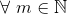;
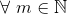; - orice număr natural se divide cu el însuși:

 ;
;  este divizibil cu orice număr natural :
este divizibil cu orice număr natural :  ;
;- dacă un număr natural se divide cu un număr natural , iar se divide cu un număr natural , atunci este divizibil cu :

 (tranzitivitate);
(tranzitivitate);
- dacă un număr natural se divide cu un număr natural și invers, se divide cu , atunci cele două numere naturale sunt egale:

 ;
;
- dacă două numere naturale și sunt divizibile cu un număr natural , atunci suma 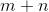 și diferența
 se divid cu :
se divid cu :

- dacă un număr natural este divizibil cu un număr natural , atunci oricare ar fi un număr natural , produsul
 se divide cu :
se divide cu :

 .
.
Exemple:
- Avem:
-
 , deoarece există numărul natural
, deoarece există numărul natural  astfel încât 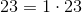;
astfel încât 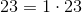;  , deoarece există numărul natural
, deoarece există numărul natural  astfel încât
astfel încât  ;
; , deoarece există numărul natural
, deoarece există numărul natural  astfel încât
astfel încât  .
.
-
- Avem:
-
 , deoarece există numărul natural astfel încât
, deoarece există numărul natural astfel încât  ;
; - 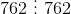, deoarece există numărul natural astfel încât
 ;
;  , deoarece există numărul natural astfel încât
, deoarece există numărul natural astfel încât  .
.
-
- Avem:
-
 , deoarece există numărul natural astfel încât
, deoarece există numărul natural astfel încât  ;
;  , deoarece există numărul natural astfel încât
, deoarece există numărul natural astfel încât  ;
;- 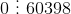, deoarece există numărul natural astfel încât
 .
.
-
- Fie numerele naturale
 și
și  . Cum:
. Cum:

Astfel, avem că  , deoarece există numărul natural
, deoarece există numărul natural  astfel încât
astfel încât  .
.
- Fie numerele
 și 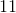. Cum:
și 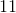. Cum:

Obținem astfel că  este divizibil cu , deoarece există numărul natural
este divizibil cu , deoarece există numărul natural  astfel încât
astfel încât  .
.
- Fie numerele
 și
și  .
.
Știm că  și
și  .
.
Rezultă că:

Atât diferența, cât și suma celor două numere este divizibilă cu , ultima cifră a lor fiind .
- Fie numerele
 și 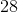.
și 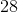.
Știm că  și
și  .
.
Rezultă că:

Avem:
 este divizibil cu , deoarece există numărul astfel încât
este divizibil cu , deoarece există numărul astfel încât  .
.  este divizibil cu , deoarece există numărul
este divizibil cu , deoarece există numărul  astfel încât 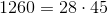.
astfel încât 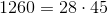.
- Fie numărul
 .
.
este divizibil cu  , ultimele sale două cifre formând numărul
, ultimele sale două cifre formând numărul  , care se împarte exact la .
, care se împarte exact la .
Atunci  ; căci numărul format de ultimele două cifre este
; căci numărul format de ultimele două cifre este  , care se împarte exact la , acesta este divizibil cu .
, care se împarte exact la , acesta este divizibil cu .
- Fie numărul
 .
.
este divizibil cu  , deoarece există numărul astfel încât 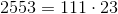.
, deoarece există numărul astfel încât 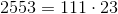.
Atunci  va fi divizibil cu , deoarece există numărul natural
va fi divizibil cu , deoarece există numărul natural  astfel încât
astfel încât  .
.